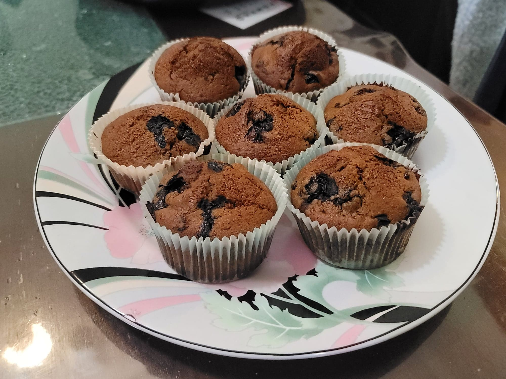

Sourdough Blueberry Muffins

Ingredients:
- 1 cup (120g) Flour
- 1 cup (138g) Cornmeal
- 3/4 tsp Salt
- 1 tsp Baking soda
- 1 1/2 tsp Cinnamon
- 1 cup (227g) Sourdough starter
- 1/4 cup Milk
- 1 large Egg
- 4 tbsp Butter, melted
- 1/2 cup Molasses, or substitue Maple syrup or Honey
- 2 cups Blueberries, frozen or fresh
- Course coating sugar
Instructions:
- Preheat the oven to 425 degrees Fahrenheit. Grease a muffin pan and optionally line with muffin papers.
- Combine the flour, cornmeal, salt, baking soda, and cinnamon into a large bowl. Mix until homogenous.
- Into a separate large mixing bowl, add in the sourdough starter, milk, egg, butter, and molasses. Beat together with an electric handmixer.
- Slowly add in the dry ingredients while continuing to beat the mixture. Once homogenous, gently fold in the blueberries.
- Fill the cups of the muffin pan 2/3 of the way full. Sprinkle with coating sugar right before placing into the oven. Bake for 25 minutes or until a toothpick comes out clean. Then remove from the oven and let cool for 5 minutes. After the 5 minutes, remove from the pan to cool without the residual heat of the pan. Serve warm or at room temperature.